Baked vehicles
Read back out of the .glb files
VehicleGLB.swift writes, and placed by the
UnitPlacements the map sends. Compare with
../solid/, which draws the same wagons as slabs.
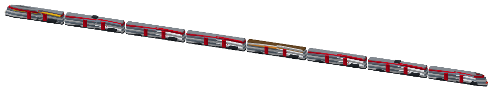
ic1-fv-dostoRABe 502 FV-Dosto · 5 models · 4480 triangles · 221 kB 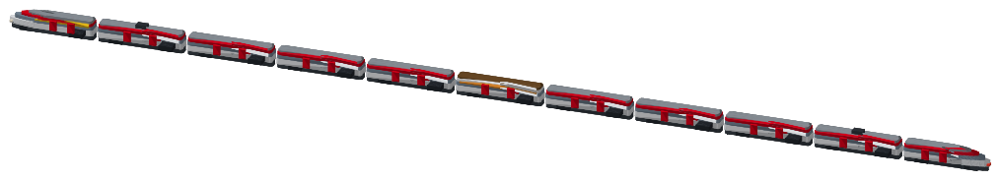
ic2-girunoRABe 501 Giruno · 5 models · 4944 triangles · 193 kB 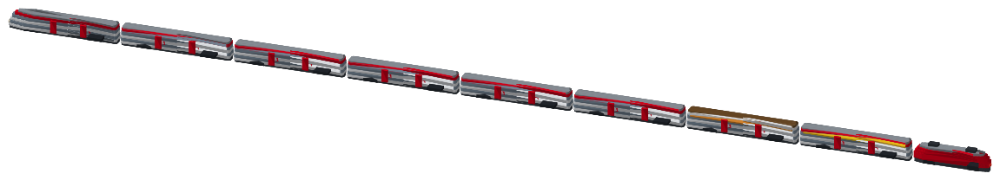
ic3-re460-ic2000Re 460 + IC2000 · 5 models · 4832 triangles · 208 kB 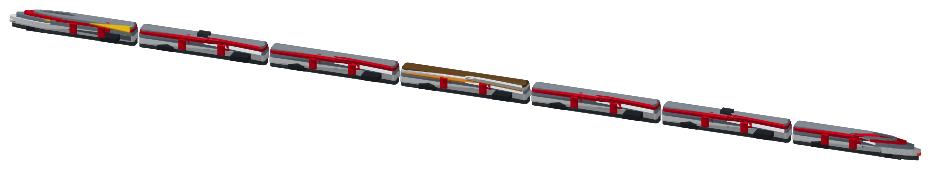
ic5-icnRABDe 500 ICN · 5 models · 3280 triangles · 193 kB 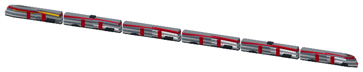
ir16-kissRABe 511 KISS · 4 models · 3376 triangles · 177 kB 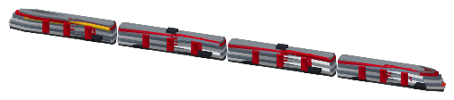
s12-dtzRABe 514 DTZ · 3 models · 2416 triangles · 142 kB 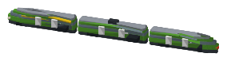
r-thurbo-gtwRABe 526 GTW · 3 models · 1344 triangles · 108 kB 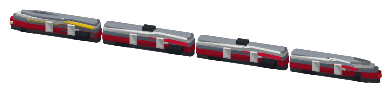
r-rhb-capricornRhB ABe 4/16 Capricorn · 3 models · 1776 triangles · 108 kB 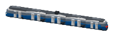
tram-zurich-cobraCobra Be 5/6 · 4 models · 1264 triangles · 97 kB 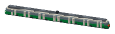
tram-basel-flexityFlexity Be 6/8 · 4 models · 1648 triangles · 95 kB 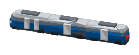
trolleybus-zurichDouble-articulated trolleybus · 3 models · 816 triangles · 73 kB 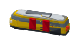
postautoPostAuto · 1 model · 496 triangles · 40 kB 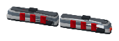
metro-lausanneMS2 · 2 models · 992 triangles · 80 kB 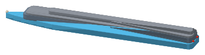
boat-cgnBelle Époque · 1 model · 344 triangles · 27 kB 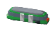
funicularFunicular · 1 model · 480 triangles · 39 kB